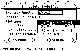
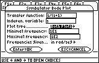
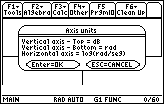
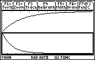

bode()
by Roberto Pérez-Franco
This powerful program allows you to plot the Bode gain and phase diagrams of a transfer function. It has the same functionality that the EE*Pro Bode grapher, with the advantage of allowing both graph to plot in the same screen (one on TOP, the other on BOTTOM), and that frequencies can be whether in rad/seg or in Hz.
Input data is typed in a dialog box presented by the tool when it is runned. You enter the transfer function, the independent variable, the type of plot you wish, the starting and ending frequencies and the units of the frequency.
Output data in the plot. The x-axis is presents logaritmical values.
When you're done, you run the program and select Clean & End in the first PopUp choose box.
The following sequence of screen shots illustrate the use of this tool. The function we want to plot the diagram for is s/(s+1), from .
| 1. Run the program: type sq\bode(
) and
press Enter.
|
2. Select "Bode Plot" and press Enter.
|
| 3. Enter the transfer function, the
independent variable, and select wheter you want gain, phase or both plots. In this
example, we selected both plots...  |
4. Enter the minimal and maximal frequency of
the plot. We used 10 and 100 rad/seg. Press Enter.  |
| 5. The program informs you on the axis units.
Press Enter.  |
6. The program plots the diagrams. To go home
press HOME (dah!).  |